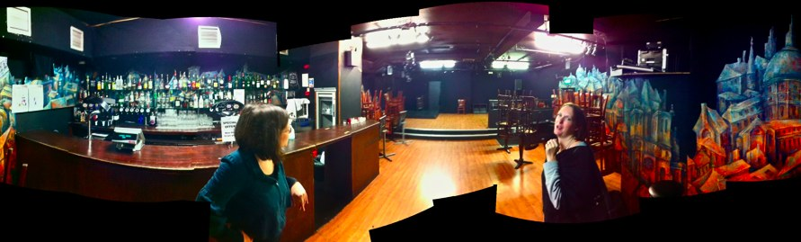

Friday 4th November – 10am-6pm, Corn Exchange, Brighton, UK
SOLD OUT
A day of User Experience indulgence


The UX Brighton team are proud to be presenting a User Experience Conference at Brighton Dome’s Corn Exchange.
Whether you’re new to the field or you’re a design industry professional, UX Brighton 2011 is a great opportunity to debate, cogitate and learn about User Experience through the lense of various disciplines stretching from anthropology to cross-channel design.
Blending provocative thinkers and seasoned professionals from the UK and Europe with speakers from Brighton’s renowned UX community, we’re here to look at how User Experience design is changing with the times.
This is our second event, after last year’s success at UX Brighton 2010.
Reviews of 2010
The very first UX Brighton last September was an incredible event that brought together a lot of talented people. The audience was engaged, informed, and entertaining. Rarely have I had so much fun talking to conference participants and I learned a lot, too. Brighton is a helluva cool town! This could well become one of the top three events in the UK - so get your ticket NOW!
Eric Reiss, Speaker at UX Brighton 2010, CEO, The FatDUX Group
UX Brighton has been a great experience. It's an intimate conference with a great audience and atmosphere. I loved speaking there and felt honored to be amongst a superb selection of speakers.
Jeroen van Geel, Speaker at UX Brighton 2010, Founder & CEO, Johnny Holland
Really enjoyed the day and the wide range of topics covered. Since then I've snuck in plenty of facts from the talks into client meetings and it's helped to improve my UX skills. Ace.
Ali Pettit, Senior Account Manager, Public Life
The UX Brighton conference has managed, in its first year, to put together a group of speakers worthy of a much higher ticket price. The atmosphere created was entertaining and exciting to be in. I look forward to the next one.
Martin Gordon, Marketing Designer, dotDigital Group plc
I found UXBrighton 2010 to be both thought provoking and useful - the speakers were insightful and I had a great time chatting with like-minded UXers. Looking forward to 2011!
Al Power, Web Development Lead, Nominet UK
This was my first UX event and will definitely not be my last. I took away plenty of tips that I can apply to web writing, as well as an improved understanding of how my audience thinks and interacts with web pages.
Helen Keevy, Core Copywriting
The first UX Brighton was insightful with some great speakers who raised interesting arguments. I look forward to seeing what the next conference has to offer.
Elly Boulboul, Graphic Designer, Strawberry Soup
I found UX Brighton 2010 to be entertaining and informative - a good combination in my book. UX Brighton is important in championing the needs of users, something often overlooked, yet central to the success of products we make.
Phil Blume, Project Manager, Adaptive Technologies Ltd.
About the organisers
UX Brighton
Now in its third year as a growing and thriving community, the UX Brighton group regularly meet to mull over topical issues, have healthy debates and investigate User Experience in many different forms. They run talks on a monthly basis which cover a wide range of topics from looking at human behavioural patterns to reviewing UX books.
Danny Hope
Danny is a User Experience Consultant and the founder of the UX Brighton community. He’s worked with award-winning gallery and museum sites, content management systems and regularly gets his hands dirty working with complex applications for big name brands. Find him at @yandle.
James Page
James is the co-founder of Webnographer, an online tool for remote usability testing. James started off as a programmer, but soon realised that he would have to be entrepreneur to make his projects come to fruition. James has been involved in several start ups, including Eidos (famous for Tomb Raider) and Deckchair.com with Bob Geldof. He’s passionate about making software less frustrating. Find him at @webnographer.
Speakers & Schedule
Ian Fenn is no longer be speaking at UX Brighton 2011. His slot has been filled by the excellent Simon Johnson
09.00 Registration
Try to arrive as early as possible.
10.00 Welcome address
Danny Hope & James Page
10.05 Robin Dunbar
Connecting anthropology and User Experience: What can we learn from the study of social behaviour and how groups function most effectively?
Professor Robin Dunbar is a British anthropologist who specialises in the evolution of sociality. His work is fundamental to User Experience design and the implications of his findings are vast when it comes to designing social spaces.
What’s he known for?
Robin is best known for formulating Dunbar's number which can be defined as: “The measurement of the cognitive limit to the number of individuals with whom any one person can maintain stable relationships.” He theorised that this was a limit of 150 individuals. The implications of this for User Experience design are vast when it comes to designing social spaces and creating communities.
His principle research areas also include the behavioural ecology of social decision-making, modelling socio-ecological systems and their evolution, the structure and dynamics of social networks, and the nature of social bonding.
The credentials
He is currently Professor of Evolutionary Anthropology and the Director of the Institute of Cognitive and Evolutionary Anthropology of the University of Oxford and the Co-director of the British Academy Centenary Research Project.
11.05 Break
11.25 Andrea Resmini
Designing cross-channel user experiences
50 years ago we relied on books and people for information, then we gradually started going to our desktop computers to look things up, now we've got iPads and other restless, smaller, faster physical devices.
Information is bleeding out of the Internet and becoming ever more embedded in the real world. The boundaries are blurring between the physical and the digital.
Our experiences travel across channels: we check something out on the web, we get texts, we go to the shop, we bring the thing home, we connect it, we get more services online. Shouldn't our design vision reflect this behaviour too?
What’s he known for?
Andrea Resmini is President of the Information Architecture Institute, he chairs the Italian IA Summit, is a founding member of the European centre for user experience, and finally is one of the founders and now an Associate Editor for the Journal of Information Architecture.
The credentials
Andrea has been working as an ICT professional since 1989. He holds an MA in Architecture and Industrial Design and a PhD in Legal Informatics and IT Law. He’s now working at the University of Borâs, Sweden, researching and teaching IA- and UX-related courses while still hoisting the IA flag at FatDUX, a leading UX firm based in Copenhagen with offices all over Europe, the US and Canada.
12.05 Mike Atherton
Beyond the Polar Bear
Domain-driven design breaks down complex subjects into the things people usually think about. By intersecting across subjects, links themselves become facts, allowing humans and machines to learn through undirected user journeys. This paradigm shift from labeling boxes to taming rich data is a vital skill for the modern Information Architect.
Using case studies from the BBC’s Food and Natural History products, you’ll learn to unlock the potential of your content, create scalable navigation patterns, and achieve simply fabulous SEO. The next web is here. Stop worrying about the perfect taxonomy, and start worrying about making your content findable, pointable, searchable and sharable.
What’s he known for?
An enthusiast of evidence-based design and content strategy, Mike evangelises to management types on the need to think beyond business drivers and make stuff people actually care about. He has spoken on topics as diverse as Domain Modelling and Disneyland at conferences in the UK and the US.
The credentials
Over 15 years in the business, man and boy, Mike is an independent UX consultant who is passionate about sensible data structures, and fights to ensure user experience extends outside the boundaries of any one website. Lately he's been busy figuring out how the BBC’s archive of factual programming can be used to build popular products.
12.40 Break for lunch
14.00Simon Johnson
The aging question, dignity through design
There are currently 11 million people in the UK aged between 45 and 60. They own 70% of the nation's wealth. In 20 years time they could own 85-90% of disposable income in the UK. Recent figures show that those aged 50+ spend more time online that 18-24 year olds. In addition, there are equal numbers of those over 55 with iPhones as there are in the 24-30 age bracket, which challenges the assumption older generations don't use cutting edge technology.
Simon will talk about the role that technology plays in older adults lives; how their relationship with technology differs to that of the young; how having the latest gadgets helps you keep connected; how technology can alienate and stigmatise older users; what older people may want out of technology. He’ll highlight the myths and bust a few along the way before discussing a Universal Design solution.
What he’s known for?
In his own words, Simon is a mad Geordie that grew up in the Bahamas and lives with his Nepalese wife and 4 cats in SE London
. He’s also an experienced Usability Consultant and designer with strong qualitative research background. In particular ethnographic research including contextual/depth interviews with more than 300 user interviews on the behalf of international blue chip clients.
He’s also involved with the UK Usability scene having spoken at UPA in London and Brighton on several occasions.
The credentials
Running ethnography projects for Vodafone and Sky. As a usability consultant with Flow Interactive, mainly doing lab-based interviews for clients including TfL, The Guardian, Reuters, Law society, Yell, Play.com, SonyBMG, etc.
Photo: Ofer
14.40 John Mildinhall
The ROI of design
One of the biggest challenges in convincing businesses to engage with design is to demonstrate its value. Deducing the value of a project can be very hard due to many complicating factors, not least that the client is often unwilling to share the difference in their bottom line.
This talk focuses on how to articulate the value of design to businesses, using relevant examples. It discusses the way that value for money can be framed and discussed before a project, and how to understand the impact of your project afterwards.
What is he known for?
John has been working to create elegant and useful interfaces for over eight years. He has worked for clients in Financial Services, Energy, Government and National Security. He is currently Principal of Research at Electronic Ink. He has also worked as a neuroscientist, making contributions to our understanding of human oculomotor function. John spent a year running the largest ever survey in Europe, and as a hobby has an interest in multivariate data visualisation.
The credentials
John has a PhD in Human Factors Psychology from the University of Bristol. He has worked on large scale projects for FTSE100 organisations, including a project that keep the lights on in the UK, and others that are paramount to our national security.
15.20 Maria Ana Neves
Games-led innovation helps businesses think.
Maria Ana Neves is going to talk about her experience of setting up The Thinking Hotel. The idea of the Hotel is a place that the people can escape to think and take part in games-led workshops. So far the hotel has been used for all sorts of reasons, from getting small businesses to rethink their strategic direction to getting large business to think more agile.
What’s she known for?
Maria Ana is a successful entrepreneur. She is driven by ideas as well as being a strategist and innovator working with small businesses. She has lead businesses and processes of change.
The credentials
Maria Ana teaches Innovation at Central Saint Martins College Of Art and Design and has worked in advertising, design, educational resources, retail, luxury retail, fashion, textiles, and corporate training. She has a passion for social change and volunteers for social inclusion and sustainability projects.
15.55 Break
16.15 Giles Colborne
How does distraction affect design?
What’s he known for?
Giles is the author of Simple and Usable: web mobile and interaction design published by New Riders in 2010. Giles is a highly rated speaker at international conferences.
The credentials
He’s been working in usability and user centred design since 1991. He formed CX Partners with Richard C addick in 2004 focusing on creating outstanding user experiences and measurable changes to projects and products. Giles is also a former President of the UK Usability Professionals’ Association and now sits on their Global Advisory Committee and international Conference Committee. He has worked with British Standards Institute in developing guidance on web accessibility.
16.55 Cennydd Bowles
Designing the wider web
The dominance of the desktop browser is over. The web is wider now. It’s time to move away from ‘device specific thinking’ and time to transcend ‘platformism’. Now we’re designing for contexts, displays, connectivity, and inputs by breaking devices down into first principles. Designers should now be aiming to create great user experiences using the truly fluid nature of the web.
What’s he known for?
Cennydd’s book ‘Undercover User Experience Design’ has been acclaimed as "a must have for your bookshelf”, and his second book “Designing the wider web” is due out this winter. He writes a popular design blog and regularly contributes to influential publications including Pervasive IA, A List Apart, Johnny Holland and .Net Magazine in which he promotes thoughtful, ethical design that touches people's lives.
The credentials
Cennydd is a UX designer with nine years of professional experience. He often speaks at design and technology conferences across the world, including SXSW, Future of Web Apps, and the prestigious closing keynote at the 2011 Information Architecture Summit. His thoughts on design have been quoted by the Guardian, PBS, Design Week and the Abu Dhabi National.
As an active member of the British user experience community, he co-founded the UX London and UXCampLondon conferences.
He specialises in product design, HTML prototyping, Agile UX, and guerrilla methods within businesses with limited adoption of design.
17.30 Summing up
18.00 Finish
It's a wrap! To the after party!
Sponsors
Platinum Sponsors
Gold Sponsors

Silver Sponsors
Sponsor UX Brighton 2011
Sponsor packs
Download full sponsorship details (PDF)
Call (or email) Danny to discuss sponsorship options: 07595‒226‒792


The Corn Exchange, Brighton, UK

After party
After a day spent absorbing new ideas, we’ll head over to the Latest Music Bar (5 minutes from the Corn Exchange) to relax and chat about the day’s topics and hopefully make a few new friends in the process.
Brighton Hotels
VisitBrighton.com has a great list of hotels, B&Bs and other accommodation to stay in.
Check availability for a one night stay on 3rd November, ready for the conference on the 4th...